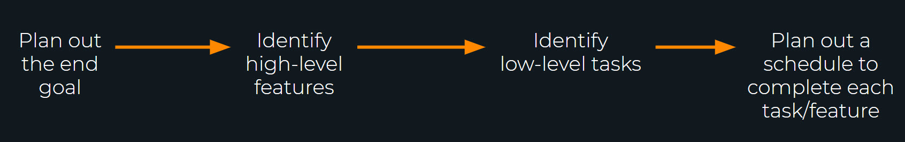

Post an announcement for your students this week in Teams.
Ensure that communication in their teams is good as they plan out their projects for the remainder of the semester.
Important topics to teach your students this week. These topics will come primarily from the reading and should contain information that will help them with their assignments.
To prepare students to build an awesome Node.JS app on their own
To prepare students for future jobs
To build their understanding of projects, requirements, planning and risks regardless of language or platform
To further expand their knowledge of Node.JS
Risk Management in Software Development and Software Engineering Projects
Building a Stable Node.js Project Architecture. Best Practices for Node.js Development
potential problem
an activity or event that may compromise the success of a software development project
the possibility of suffering loss
total risk exposure to a specific project will account for both the probability and the size of the potential loss.
Risk containment and mitigation.
Identify risks and plan accordingly.
Be ready to act when a risk arises, drawing upon the experience and knowledge of the entire team to minimize the impact to the project.
Identify risks and their triggers
Classify and prioritize all risks
Craft a plan that links each risk to a mitigation
Monitor for risk triggers during the project
Implement the mitigating action if any risk materializes
Communicate risk status throughout project
New, unproven technologies - The majority of software projects entail the use of new technologies. Training and knowledge are of critical importance
User and functional requirements - Software requirements frequently change and adapt throughout project development causing poor product development.
Application and system architecture - Taking the wrong direction with a platform, component, or architecture can have disastrous consequences. Do your research!
Performance
Organizational - Balance: needs of the dev. team and the expectations of customers
Code style
Your experience with the integration of third-party means and devices in your application (i.e. Google Maps, data collection, analytics tools, e-communication means,etc.)
Data models you’re up to work with (files, databases or third-party APIs)
Communication and data exchange tools you’re going to use (REST API, Blouse Protocol, Socket io, GraphQl, DDP protocol)
Possibility to utilize 3rd party libraries (hardware libraries, special algorithms)
Node.js community is up and thriving. A lot of neat features are invented and written by other developers already. So before you create a particular functionality for your application, make sure if someone else has not encountered the exact problem before.
Be aware of duplicates and malicious code
Keep them up to date
Use code quality control tools, like Lint
Keep track of your files size - shoot for 300-500 lines or less
Comment your code!
Handle Errors
Be aware of common node development tools like:
Gulp
Nodemon
Forever, pm2
Winston
Threads
Identify purpose of website
Plan with the end in mind
Customer usage
Potential employer viewage
Planning documentation
Desmond Tutu once wisely said that “there is only one way to eat an elephant: a bite at a time.” Web applications frequently seem daunting when we are first planning them out. Work from the top down, starting with who your audience is and what it needs to do, then break it down into features, the smaller more manageable tasks.
How would you like to be perceived through your website?
What is the single most important thing visitors want from your site?
What is the single most important thing you want to convey on your site?
Describe your target audience.
Who is your competition?
Why should clients choose your products or services over the competition?
How will you judge if this is a successful project?
List three or more websites you like that are similar to what you are going to create.
The class activity this week is going to be a little different. They will not do any programming, they will simply get practice taking a large task and breaking it up into smaller ones, and planning on a project. This activity is intended to be done in groups during class time. With about 10-15 minutes left, it is helpful for students to come together as a class and discuss different challenges they faced, things they learned, or strategies they implemented.
This week is all about project planning.
Make sure students know that the better they plan, the more likely they are to be succesful with their projects.
Instructors that are pairing up with WDD 330, check in on your teams to make sure that each team is doing well and has a good handle on project scope expectations.